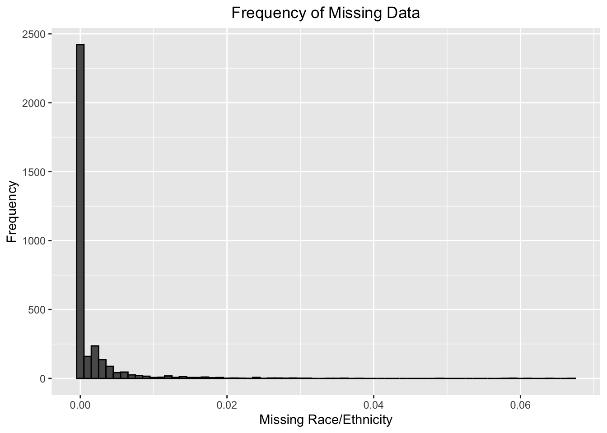

Chapter 3 Data
3.1 Sources
The NYC Department of Education was responsible for collecting and publishing this data. The school-level test scores were collected after they were administered and graded, and then this data was used to calculate the district-level test scores. The demographic information was collected using both the student’s information once they entered the NYC public school system, and census data. We chose to use standardized testing data from grades 3-8 over Regent’s scores (the high school equivalent of these elementary and middle school tests) because there are more middle and elementary schools in the city, and thus, more data to work with. The data was pulled from six different spreadsheets, with categorical and numerical data, with a range of 16 to 44 variables. The two largest spreadsheets had 37,000+ observations, while the smallest had only 175. The datasets did not have many issues, as there were only two missing observations in total; both were test scores for a specific school in a specific year (one Math and one ELA). However, there was a great deal of data transformation, merging, and cleaning that needed to be done in order to investigate some of the questions brought forth earlier.
3.2 Cleaning / transformation
Here are the various steps of the data cleaning and transformation processes, broken down into smaller tasks.
- Reading in the Data
demographic_notes <- read_excel("../demographic_snapshot.xlsx", sheet = "NOTES", na = "MISSING")
demographics_school <- read_excel("../demographic_snapshot.xlsx", sheet = "School", na = "MISSING")
demographics_district <- read_excel("../demographic_snapshot.xlsx", sheet = "District", na = "MISSING")
math_school <- read_excel("../school-math-results-2013-2022-(public).xlsx", sheet = 2, na = "MISSING")
math_district <- read_excel("../district-math-results-2013-2022-(public).xlsx", sheet = 2, na = "MISSING")
ela_school <- read_excel("../school-ela-results-2013-2022-(public).xlsx", sheet = 2, na = "MISSING")
ela_district <- read_excel("../district-ela-results-2013-2022-(public).xlsx", sheet = 2, na = "MISSING")- Data Transformation
Prepping the individual datasets to be joined, starting with getting rid of unnecessary years
demographics_district_filtered <- filter(demographics_district, Year == '2017-18' | Year == '2018-19' | Year == '2021-22')
demographics_school_filtered <- filter(demographics_school, Year == '2017-18' | Year == '2018-19' | Year == '2021-22')
math_school_filtered <- filter(math_school, Year == '2018' | Year == '2019' | Year == '2022')
math_district_filtered <- filter(math_district, Year == '2018' | Year == '2019' | Year == '2022')
ela_school_filtered <- filter(ela_school, Year == '2018' | Year == '2019' | Year == '2022')
ela_district_filtered <- filter(ela_district, Year == '2018' | Year == '2019' | Year == '2022')Converting years of demographics spreadsheets to single year format instead of school year
demographics_district_filtered[demographics_district_filtered == '2017-18'] <- '2018'
demographics_district_filtered[demographics_district_filtered == '2018-19'] <- '2019'
demographics_district_filtered[demographics_district_filtered == '2021-22'] <- '2022'
demographics_school_filtered[demographics_school_filtered == '2017-18'] <- '2018'
demographics_school_filtered[demographics_school_filtered == '2018-19'] <- '2019'
demographics_school_filtered[demographics_school_filtered == '2021-22'] <- '2022'Renaming the “District” column in the demographics dataset so it matches with the ELA/Math ones by district
demographics_district_filtered <- rename(demographics_district_filtered, "District" = "Administrative District")Converting “Year” columns of both demographics datasets & “District” column of the demographic district dataset to numeric so they match the Math/ELA datasets
demographics_school_filtered$Year <- as.numeric(demographics_school_filtered$Year)
demographics_district_filtered$District <- as.numeric(demographics_district_filtered$District)
demographics_district_filtered$Year <- as.numeric(demographics_district_filtered$Year)Selecting the rows where data for “All Grades” is used in the Math/ELA spreadsheets
math_district_filtered <- filter(math_district_filtered, Grade == "All Grades")
ela_district_filtered <- filter(ela_district_filtered, Grade == "All Grades")
math_school_filtered <- filter(math_school_filtered, Grade == "All Grades")
ela_school_filtered <- filter(ela_school_filtered, Grade == "All Grades")Renaming all of the columns in the Math/ELA spreadsheets so we know which scores correspond to which test after everything is joined. The “_m” suffix corresponds to a Math score, and the “_e” suffix corresponds to an ELA score
for (i in 7:ncol(math_school_filtered)) {
oldname <- colnames(math_school_filtered[i])
newname <- paste(oldname, "m", sep = "_")
colnames(math_school_filtered)[i] <- newname
}
for (i in 7:ncol(ela_school_filtered)) {
oldname <- colnames(ela_school_filtered[i])
newname <- paste(oldname, "e", sep = "_")
colnames(ela_school_filtered)[i] <- newname
}
for (i in 5:ncol(math_district_filtered)) {
oldname <- colnames(math_district_filtered[i])
newname <- paste(oldname, "m", sep = "_")
colnames(math_district_filtered)[i] <- newname
}
for (i in 5:ncol(ela_district_filtered)) {
oldname <- colnames(ela_district_filtered[i])
newname <- paste(oldname, "e", sep = "_")
colnames(ela_district_filtered)[i] <- newname
}- Joining datasets (one for school, one for district)
df_district <- ela_district_filtered%>%inner_join(math_district_filtered, by = c('District', 'Year'))%>%inner_join(demographics_district_filtered, by = c("District", "Year"))
df_school <- ela_school_filtered%>%inner_join(math_school_filtered, by = c('DBN', 'Year'))%>%inner_join(demographics_school_filtered, by = c("DBN", "Year"))- Adding a new column in each dataframe that shows the percentage of students in a given district/school who sat for testing in a given year
df_school$`% tested_e` <- df_school$`Number Tested_e`/df_school$`Total Enrollment`
df_school$`% tested_m` <- df_school$`Number Tested_m`/df_school$`Total Enrollment`
df_district$`% tested_e` <- df_district$`Number Tested_e`/df_district$`Total Enrollment`
df_district$`% tested_m` <- df_district$`Number Tested_m`/df_district$`Total Enrollment`- Getting rid of unnecessary columns in each of the combined dataframes
df_school <- df_school %>% select(-"% Female", -"% Male", -contains("Number"),-"# Missing Race/Ethnicity Data",-"# Multi-Racial",-"# Black", -"# Asian", -"# Female", -"# Male", -"# White",-"# Hispanic",-"# Native American", -"# English Language Learners",-contains("Level"),-contains("..."), -contains("Category"), -contains("School Name"),-"# Poverty",-contains("Grade"), -"# Students with Disabilities")
df_district <- df_district %>% select(-"% Female", -"% Male", -contains("Number"),-"# Missing Race/Ethnicity Data",-"# Multi-Racial",-"# Black", -"# Asian", -"# Female", -"# Male", -"# White",-"# Hispanic",-"# Native American", -"# English Language Learners", -contains("Level"), -contains("Grade"), -contains("Category"), -"# Poverty", -"# Students with Disabilities")- Getting rid of the “Above 95%” entries in each dataframe- replacing it with 0.95 for the sake of analysis. Then converting numeric columns to numeric again
df_school[df_school == "Above 95%"] <- "0.95"
df_district[df_district == "Above 95%"] <- "0..95"
df_school[,2:ncol(df_school)] <- df_school[,2:ncol(df_school)]%>%lapply(as.numeric)
df_district[,2:ncol(df_district)] <- df_district[,2:ncol(df_district)]%>%lapply(as.numeric) - Imputing all missing values with the mean of the column; too many rows/columns to create a heatmap and only 2 missing values (one in the Math scores and one in the ELA scores) so we will just impute them with the mean value for each category and analyze the other missing values later
df_school$`Mean Scale Score_e`[is.na(df_school$`Mean Scale Score_e`)] <- mean(df_school$`Mean Scale Score_e`,na.rm = TRUE)
df_school$`Mean Scale Score_m`[is.na(df_school$`Mean Scale Score_m`)] <- mean(df_school$`Mean Scale Score_m`,na.rm = TRUE)- Creating a % POC column (that sums all of the other races) for racial analysis of data
df_school$`% POC` <- (1-df_school$`% White`)
df_district$`% POC` <- (1-df_district$`% White`)- Renaming specific columns for visibility in plots
df_school <- rename(df_school, "% SWD" = "% Students with Disabilities")
df_school <- rename(df_school, "% ELL" = "% English Language Learners")
df_district <- rename(df_district, "% SWD" = "% Students with Disabilities")
df_district <- rename(df_district, "% ELL" = "% English Language Learners")
df_school <- rename(df_school, "ENI" = "Economic Need Index")
df_district <- rename(df_district, "ENI" = "Economic Need Index")- Writing two new csv’s so we don’t have to touch any of the old dataframes/csv’s anymore
write_csv(df_school, "../School.csv")
write_csv(df_district, "../District.csv")3.3 Missing value analysis
After importing our two new datasets, we can see that there are no more NA’s in either.
head(colSums(is.na(new_school_data))) %>% sort(decreasing = TRUE)## DBN Year Mean.Scale.Score_e Mean.Scale.Score_m
## 0 0 0 0
## Total.Enrollment X..Asian
## 0 0head(colSums(is.na(new_district_data))) %>% sort(decreasing = TRUE)## District Year Mean.Scale.Score_e Mean.Scale.Score_m
## 0 0 0 0
## Total.Enrollment X..Asian
## 0 0At first glance using the skim() function, the data seems to be clean. As shown above, there were 0 missing values in the dataset, however the missing values are accounted for in the school and district datasets via the “% Missing Race/Ethnicity” and “% tested_e”/“% tested_m” columns. Our approach is to start by looking for missing values by filtering the “% Missing Race/Ethnicity” column and looking at the percentage of missing data.
First we will find the minimum and maximum values for missing data in this column to determine the range of missing race/ethnicity data. Using the min() and max() functions, we discovered that the percent of missing data lies between 0% and ~ 6.7% for the school dataset and 0.09% and 2.4% for the district dataset. It’s good to note that the district data doesn’t have a large number of missing values because districts are comprised of schools and data has to be reported to the district each school belongs in. If a large amount of district data was missing, we’d have to question where a bunch of the individual school data went.
Before using data visualization methods, we thought it’d be important to look at the missing data in intervals of 0.2 for the school data.
We found that:
* 2421 rows in the school dataset have no missing values.
* 864 rows in the school dataset have between 0% and 2% missing data.
* 36 rows in the school dataset have between 2% and 4% missing data.
* 4 rows in the school dataset have between 4% and 6% missing data.
* 3 rows in the school dataset have more than 6% missing data.
For the district data, we thought it’d be nice to look at it by intervals of 0.005.
We found that:
- 0 rows in the district dataset have no missing values.
- 61 rows in the district dataset have between 0% and 0.5% missing data.
- 26 rows in the district dataset have between 0.5% and 1% missing data.
- 8 rows in the district dataset have between 1% and 1.5% missing data.
- 0 rows in the district dataset have between 1.5% and 2% missing data.
- 1 row in the district has over 2% missing data.
For our exploratory data analysis of the missing testing data, we decided to use a histogram. Histograms are good because they’re able to show frequency distributions. We found that the data was right-skewed. We can conclude from the visualization that majority of the schools are not missing data as it relates to racial and ethnic demographic data. This was also shown in our preliminary process, where we noted 2421 rows were not missing data, which is roughly 73% of our dataset.The remaining 27% of the data was missing about 6.7% of data, which is not too bad.
 Ridgeline plot for district by the amount of students that tested.
The ridgeline plots look at the percentage of students that tested in Math and ELA by district from the 2017-2018, 2018-2019, and 2021-2022 academic years. Originally, we wanted to facet the data by year and see if there were any differences across districts, however there is only one entry per year for each district, so that would not be helpful (or produce a ridgeline plot). We found that the distributions were very similar across both subjects. In neither Math or ELA was there more than 50% students tested. For districts 7 and 8, in both ELA and Math, there is some slight overlap. This means that some of the entries for those two districts may be the same or close in value. In the math scores, we can also see a very small overlap with districts 24 and 25. Both overlaps are miniscule.